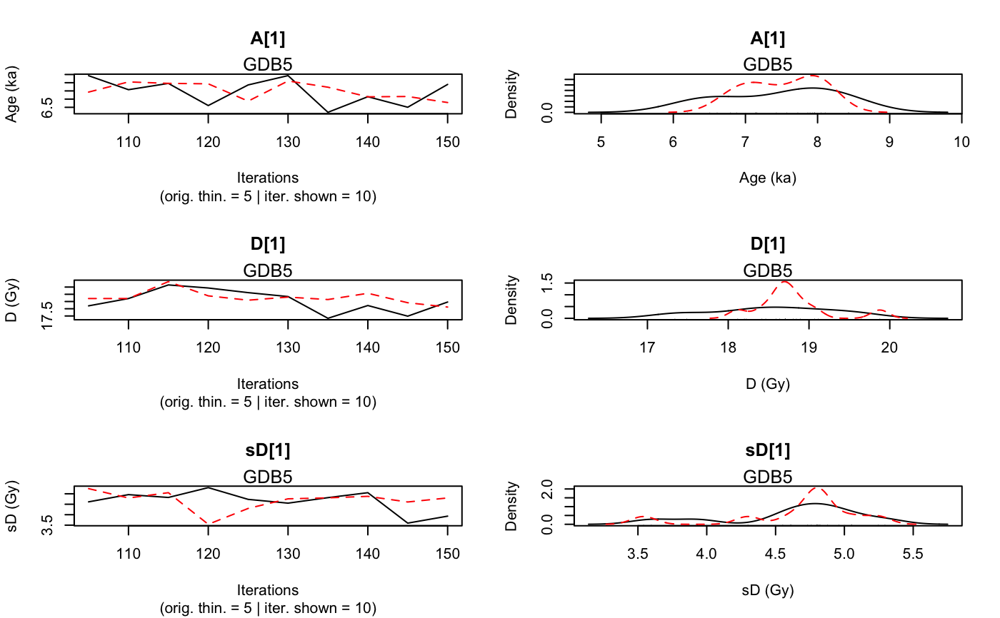
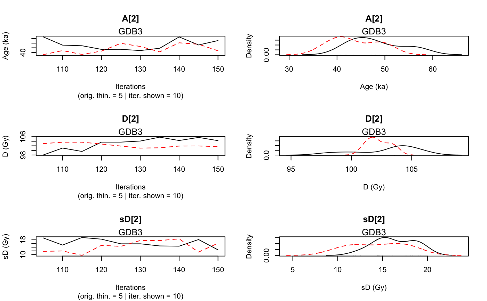
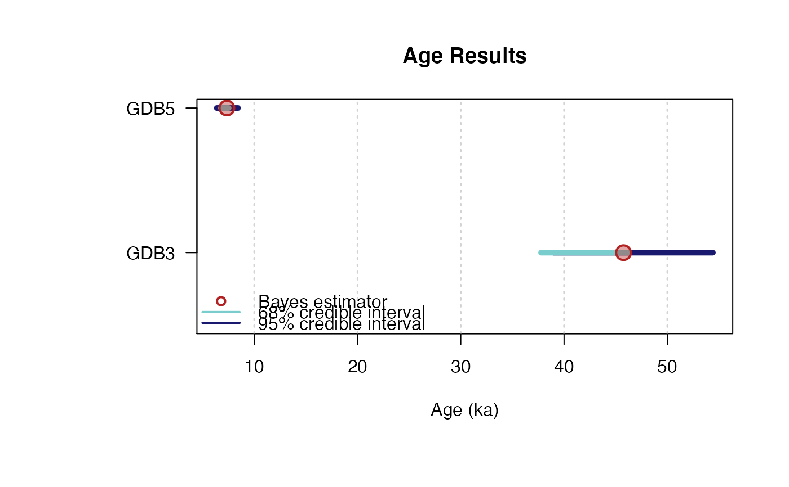

AgeS_Computation.RdThis function computes the age (in ka) of at least two samples
according to the model developed in Combes and Philippe (2017),
based on outputs of Generate_DataFile or Generate_DataFile_MG
or both of them using combine_DataFiles.
Samples, for which data is avalilable in several BIN files, can be analysed.
Single-grain or Multi-grain OSL measurements can be analysed simultaneouly.
AgeS_Computation(DATA, SampleNames, Nb_sample, PriorAge = rep(c(0.01, 100), Nb_sample), BinPerSample = rep(1, Nb_sample), SavePdf = FALSE, OutputFileName = c("MCMCplot", "summary"), OutputFilePath = c(""), SaveEstimates = FALSE, OutputTableName = c("DATA"), OutputTablePath = c(""), THETA = c(), sepTHETA = c(","), StratiConstraints = c(), sepSC = c(","), LIN_fit = TRUE, Origin_fit = FALSE, distribution = c("cauchy"), Iter = 50000, t = 5, n.chains = 3, jags_method = "rjags", quiet = FALSE, ...)
| DATA | list of objects: |
|---|---|
| SampleNames | character vector: names of samples. The length of this vector is equal to |
| Nb_sample | integer: number of samples, |
| PriorAge | numeric vector (with default): lower and upper bounds for age parameter of each sample (in ka).
Note that, |
| BinPerSample | integer vector (with default): vector with the number of BIN files per sample.
The length of this vector is equal to |
| SavePdf | logical (with default): if TRUE save graphs in pdf file named |
| OutputFileName | character (with default): name of the pdf file that will be generated by the function if |
| OutputFilePath | character (with default): path to the pdf file that will be generated by the function if |
| SaveEstimates | logical (with default): if TRUE save Bayes estimates, credible interval at level 68% and 95% and
the result of the gelman en Rubin test of convergency, in a csv table named |
| OutputTableName | character (with default): name of the table that will be generated by the function if |
| OutputTablePath | character (with default): path to the table that will be generated by the function if |
| THETA | numeric matrix or character (with default): input object for systematic and individual error.
If systematic errors are considered, see the details section for instructions regarding how to correctly fill |
| sepTHETA | character (with default): if |
| StratiConstraints | numeric matrix or character(with default): input object for the statigraphic relation between samples.
If there is stratigraphic relation between samples see the details section for instructions regarding how to correctly fill
|
| sepSC | character (with default): if |
| LIN_fit | logical (with default): if TRUE (default) allows a linear component, on top of the (default) saturating exponential curve, for the fitting of dose response curves. See details section for more informations on the proposed dose response curves. |
| Origin_fit | logical (with default): if TRUE, forces the dose response curves to pass through the origin. See details section for more informations on the proposed growth curves. |
| distribution | character (with default): type of distribution that defines how individual equivalent dose values are distributed around the palaeodose. Allowed inputs are "cauchy", "gaussian", "lognormal_A" and "lognormal_M", see details section for more informations. |
| Iter | integer (with default): number of iterations for the MCMC computation (for more information see |
| t | integer (with default): 1 every |
| n.chains | integer (with default): number of independent chains for the model (for more information see |
| jags_method | character (with default): select computation method, supported are |
| quiet | logical (with default): enables/disables |
| ... | further arguments that can be passed to control the Bayesian process, see details for supported arguments |
NUMERICAL OUTPUT
A list of type BayLum.list containing the following objects:
Sampling: that corresponds to a sample of the posterior distributions of the age (in ka), palaeodose (in Gy) and equivalent dose dispersion (in Gy) parameters for each sample;
Model_GrowthCurve: stating which dose response fitting option was chosen;
Distribution: stating which distribution was chosen to model the dispersion of individual equivalent dose values around the palaeodose of the sample;
PriorAge: stating the priors used for the age parameter (in ka);
StratiConstraints: stating the stratigraphic relations between samples considered in the model;
CovarianceMatrix: stating the covariance matrix of error used in the model, highlighting common errors between samples or not.
The Gelman and Rubin test of convergency: prints the result of the Gelman and Rubin test of convergency for
the age, palaeodose and equivalent dose dispersion parameters for each sample.
A result close to one is expected.
In addition, the user must visually assess the convergency of the trajectories by looking at the graph
generated by the function (see PLOT OUTPUT for more informations).
If both convergencies (Gelman and Rubin test and plot checking) are satisfactory,
the user can consider the estimates as valid.
Otherwise, the user may try increasing the number of MCMC interations (Iter)
or being more precise on the PriorAge parameter (for example specify if it is a young sample c(0.01,10) an old sample c(10,100)),
or changing the parameter distribution or the growth curve, to reach convergency.
Credible intervals and Bayes estimates: prints the Bayes esitmates, the credible intervals at 95% and 68% for the age, palaeodose and equivalent dose dispersion parameters for each sample.
PLOT OUTPUT
MCMC trajectories: A graph with the MCMC trajectories and posterior distributions of the age, palaeodose and equivalent dose dispersion parameters
is displayed, there is one page per sample.
The first line of the figure correponds to the age parameter, the second to the palaeodose parameter
and the third to the equivalent dose dispersion parameter.
On each line, the plot on the left represents the MCMC trajectories, and the one on the right the posterior distribution of the parameter.
Summary of sample age estimates: plot credible intervals and Bayes estimate of each sample age on a same graph.
To give the results in a publication, we recommend to give the Bayes estimate of the parameters as well as the credible interval at 95% or 68%.
Supported ... arguments
| ARGUMENT | INPUT | METHOD | DEFAULT | |
| DESCRIPTION | max.time | |||
| character | rjparallel | |||
Inf | maximum allowed processing time, e.g., | 10m | ||
| for 10 minutes (cf. | runjags::autorun.jags | ) | interacitve | |
| logical | ||||
rjparallel | FALSE | |||
| enable/disable interactive mode (cf. | runjags::autorun.jags | ) | startburnin | |
| integer | ||||
rjparallel | 4000 | |||
| number of burnin iterations (cf. | runjags::autorun.jags | ) | startsample | |
| integer | ||||
rjparallel | 10000 | |||
| total number of samples to assess convergence | (cf. | runjags::autorun.jags | ) |
How to fill StratiConstraints
If there is stratigraphic relations between samples,
informations in DATA must be ordered by order of increasing ages.
To do this the user can either fill right Names in Generate_DataFile
or in Generate_DataFile_MG (as it is indicated in Details section of these function),
or ordered by order of increasing ages outputs of Generate_DataFile
or Generate_DataFile_MG in combine_DataFiles
The user can fill the StratiConstraints matrix as follow.
Size of the matrix: row number of StratiConstraints matrix is equal to Nb_sample+1,
and column number is equal to Nb_sample.
First line of the matrix:
for all i in {1,...,Nb_Sample}, StratiConstraints[1,i]=1 that means the lower bound of the sample age (given in PriorAge[2i-1])
for the sample whose number ID is equal to i, is taken into account.
Sample relations: for all j in {2,...,Nb_Sample+1} and all i in {j,...,Nb_Sample},
StratiConstraints[j,i]=1 if sample age whose number ID is equal to j-1 is lower than sample age whose number ID is equal to i.
Otherwise, StratiConstraints[j,i]=0.
Note that StratiConstraints_{2:Nb_sample+A,1:Nb_sample} is a upper triangular matrix.
The user can also use SCMatrix or SC_Ordered (if all samples are ordered) functions
to construct the StratiConstraints matrix.
The user can also refer to a csv file that containts the relation between samples as defined above.
The user must take care about the separator used in the csv file using the argument sepSC.
How to fill THETA covariance matrix concerning common and individual error?
If systematic errors are considered, the user can fill the THETA matrix as follow.
row number of THETA is equal the column number, equal to Nb_sample.
For all i in {1,...,Nb_sample}, THETA[i,i] containts individual error
plus systematic error of the sample whose number ID is equal to i.
For all i,j in {1,...,Nb_sample} and i different from j ,
THETA[i,j] containts common error between samples whose number ID are equal to i and j.
Note that THETA[i,j] is a symetric matrix.
The user can also refer to a .csv file that containts the errors as defined above.
Alternatively you can use the function create_ThetaMatrix.
Option on growth curves
As for Age_Computation and Palaeodose_Computation, the user can choose from 4 dose response curves:
Saturating exponential plus linear growth (AgesMultiCS2_EXPLIN):
for all x in IR+, f(x)=a(1-exp(-x/b))+cx+d; select
LIN_fit=TRUE
Origin_fit=FALSE
Saturating exponential growth (AgesMultiCS2_EXP):
for all x in IR+, f(x)=a(1-exp(-x/b))+d; select
LIN_fit=FALSE
Origin_fit=FALSE
Saturating exponential plus linear growth and fitting
through the origin (AgesMultiCS2_EXPLINZO):
for all x in IR+, f(x)=a(1-exp(-x/b))+cx; select
LIN_fit=TRUE
Origin_fit=TRUE
Saturating exponential growth and fitting through the origin (AgesMultiCS2_EXPZO):
for all x in IR+, f(x)=a(1-exp(-x/b)); select
LIN_fit=FALSE
Origin_fit=TRUE
Option on equivalent dose distribution around the palaeodose
The use can choose between :
cauchy: a Cauchy distribution with location parameter equal to the palaeodose of the sample;
gaussian: a Gaussian distribution with mean equal to the palaeodose of the sample;
lognormal_A: a log-normal distribution with mean or Average equal to the palaeodose of the sample:
lognormal_M: a log-normal distribution with Median equal to the palaeodose of the sample.
Please note that the initial values for all MCMC are currently all the same for all chains since we rely on the automatic initial value generation of JAGS. This is not optimal and will be changed in future. However, it does not affect the quality of the age estimates if the chains have converged.
Combes, Benoit and Philippe, Anne, 2017. Bayesian analysis of multiplicative Gaussian error for multiple ages estimation in optically stimulated luminescence dating. Quaternary Geochronology (39, 24-34)
Combes, B., Philippe, A., Lanos, P., Mercier, N., Tribolo, C., Guerin, G., Guibert, P., Lahaye, C., 2015. A Bayesian central equivalent dose model for optically stimulated luminescence dating. Quaternary Geochronology 28, 62-70. doi:10.1016/j.quageo.2015.04.001
Generate_DataFile, Generate_DataFile_MG, rjags, plot_MCMC, SCMatrix, Age_Computation, Palaeodose_Computation, plot_Ages, create_ThetaMatrix, runjags::autorun.jags
## load data data(DATA1,envir = environment()) data(DATA2,envir = environment()) Data <- combine_DataFiles(DATA2,DATA1) ## Age computation of samples GDB5 and GDB3, priorage <- c(1,10,20,60) # these samples are not young ## without common error and without stratigraphic constraints Age <- AgeS_Computation( DATA = Data, Nb_sample = 2, SampleNames = c("GDB5","GDB3"), PriorAge = priorage, Iter = 50, n.chains = 2, quiet = TRUE )#> Warning: Adaptation incomplete#> NOTE: Stopping adaptation #> #>#> Warning: [plot_MCMC()] 'n.iter' out of range, reset to number of observations#> #> #> >> Results of the Gelman and Rubin criterion of convergence << #> ---------------------------------------------- #> Sample name: GDB5 #> --------------------- #> Point estimate Uppers confidence interval #> A_GDB5 0.98 1.08 #> D_GDB5 1.25 1.91 #> sD_GDB5 1.08 1.22 #> ---------------------------------------------- #> Sample name: GDB3 #> --------------------- #> Point estimate Uppers confidence interval #> A_GDB3 1.09 1.44 #> D_GDB3 1.5 2.98 #> sD_GDB3 1.83 3.74 #> #> #> --------------------------------------------------------------------------------------------------- #> *** WARNING: The following information are only valid if the MCMC chains have converged *** #> --------------------------------------------------------------------------------------------------- #> #> #> #> >> Bayes estimates of Age, Palaeodose and its dispersion for each sample and credible interval << #> ---------------------------------------------- #> Sample name: GDB5 #> --------------------- #> Parameter Bayes estimate Credible interval #> A_GDB5 7.452 #> lower bound upper bound #> at level 95% 6.09 8.46 #> at level 68% 6.94 7.91 #> #> Parameter Bayes estimate Credible interval #> D_GDB5 18.539 #> lower bound upper bound #> at level 95% 17.77 19.66 #> at level 68% 18.06 19.18 #> #> Parameter Bayes estimate Credible interval #> sD_GDB5 4.741 #> lower bound upper bound #> at level 95% 4.39 5.16 #> at level 68% 4.39 4.71 #> ---------------------------------------------- #> Sample name: GDB3 #> --------------------- #> Parameter Bayes estimate Credible interval #> A_GDB3 43.733 #> lower bound upper bound #> at level 95% 35.83 53.31 #> at level 68% 35.83 44.88 #> #> Parameter Bayes estimate Credible interval #> D_GDB3 101.466 #> lower bound upper bound #> at level 95% 98.14 105.79 #> at level 68% 98.14 101.46 #> #> Parameter Bayes estimate Credible interval #> sD_GDB3 16.189 #> lower bound upper bound #> at level 95% 10.21 22.78 #> at level 68% 17.98 22.78 #> #> ----------------------------------------------## Age computation of samples GDB5 and GDB3, ## without common error, assuming GDB5 age younder than GDB3 age# NOT RUN { Nb_sample <- 2 SC <- matrix( data = c(1,1,0,1,0,0), ncol = 2, nrow = (Nb_sample+1),byrow = T) ##standard Age <- AgeS_Computation( DATA = Data, Nb_sample = Nb_sample, SampleNames = c("GDB5","GDB3"), PriorAge = priorage, StratiConstraints = SC, Iter = 10000, quiet = FALSE, jags_method = "rjags" ) ##parallel mode Age <- AgeS_Computation( DATA = Data, Nb_sample = Nb_sample, SampleNames = c("GDB5","GDB3"), PriorAge = priorage, StratiConstraints = SC, Iter = 10000, quiet = FALSE, jags_method = "rjparallel" ) # }